ICPC World Finals 2014 5日目
5日目 (2014/06/25)
前日と同じく、6:30頃に起床。
朝食を食べて、バスで会場へ向かう。
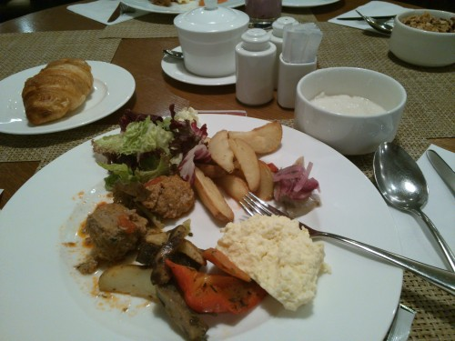
ロビーでは、Bill Poucherが前日と同じ記念撮影をしながら、今のうちにトイレ行っといたほうがいいよ！とアナウンスしていた。相変わらずテンション高いし、ずっとしゃべり続けてよく疲れないなぁと思う。
そうこうしているうちに時間になったので、ria_raiくんに荷物を預けて入場。入場待ちの列に並びながら、問題の読み方や、定期的な方針打ち合わせについて軽く最終確認をする。
入場して、コンテスト開始を待つ。去年はシステムの各モジュールに対して、Bill Poucherが確認するたびに準備完了ランプが付いていく、という演出をしていたけど、今回は特にそういう演出はなかった。
そんなことをしていたら時間になった。 コンテスト自体のログは別ページ。
結局最後まで3問目を通せず、脱力しながら終了。
他の日本チームに話を聞いてみて、どこも苦戦していたということと（でも東大は5問解いていた）、通せなかったCはデバッグの方針が合っていれば通せたかもしれないことに気づく。
космосに移動して閉会式。最初はピアノ演奏から。
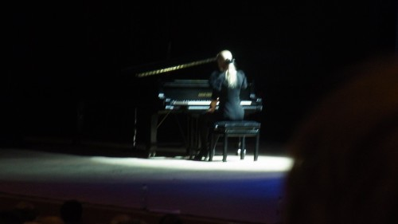 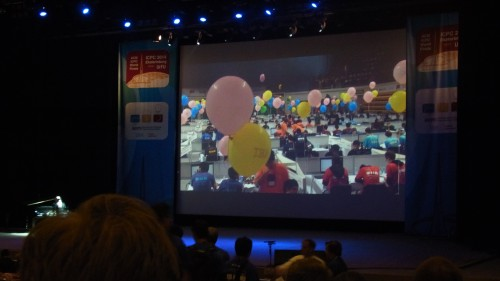
鼓笛隊の演奏。
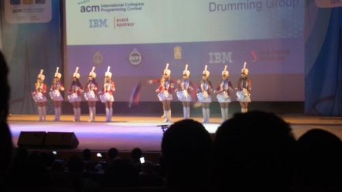
Bill Poucherによる歴代優勝校読み上げ。
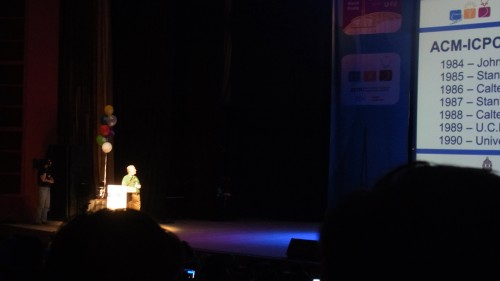
結果発表。終了1時間前でFreezeされていた順位表が下から解凍されていく。
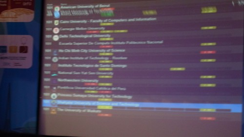
（めっちゃぶれてる……）
東大が銀メダルを獲得。すごい。
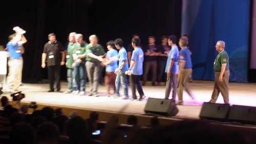
閉会式が終わって、外に出てみる。するとボランティアスタッフの学生がいて、拍手で出迎えてくれた。すごい。あとなんかピエロもいた。バネみたいな足でぴょんぴょん飛んでいる。楽しそう。
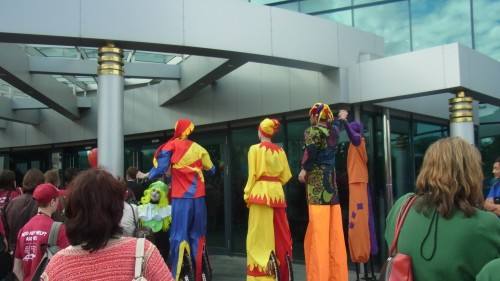
日本チームで固まっていたら、IISFのページに上げるから写真を撮りましょうということになって、集合写真を撮った。
そんなことをしていたらテーブルが埋まってしまったので、最悪立ってても食べられるハンバーガーを狙って食事を獲得しに行く。
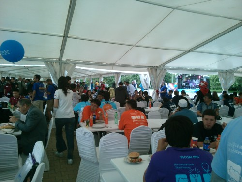
結局座れた。
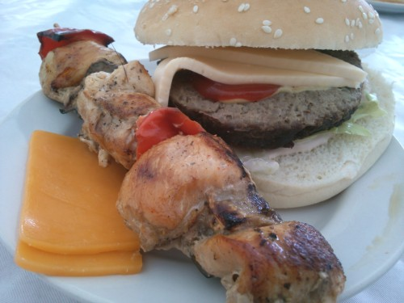
食事しながら、筑波大の人たちと今日の問題のこととか、今後のICPCのこととか話していた。
ステージの方ではバンドが演奏していて、周りで人が踊っている。ぐだぐだしていたらGHOST BUSTERSが流れてきたので、ふらふらと寄って行ってしまった（IIDX脳）。
食事も終わってやることがなくなったので、宿へ戻る。部屋に戻ってTwitterを眺めたり参加記を書いたりしていたら、@ichyoさんから下のバーで飲もうと誘われたので行く。
バーについたら、京大の人々が謎のオッサンと話していた。オッサンがカウンターに戻ったところを見計らって、京大チームに話を聞いてみる。どうも日本が好きな人らしく、彼らが話しているところに反応して入ってきて、さらにウォッカをおごってくれたらしい。すごい。
@evimaさんや@logicmachineさんも来て、テーブルが小さいので適当に他のテーブルをくっつけたりしていたら、さっきのオッサンがまた話しかけてきた。友達か？と聞いてきたので、同じ大会に参加してる友達だと答えたら、みんなにウォッカをおごってくれることになった。太っ腹すぎる。
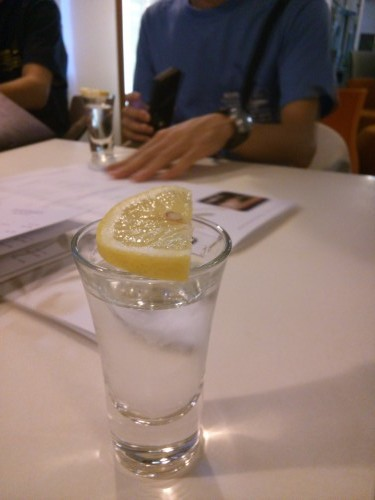
せっかくだしチーズ盛り合わせも注文してみる（こっちは自費）。
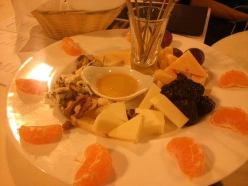
さらに@ria_raiくんととこはるさんも来て、やはりウォッカをおごってもらった。オッサンもカウンターからこっちのテーブルに移ってきて、みんなでいろいろと話をする。
どうやら大使館の駐在員をやっている人らしく、奥さんが日本人なので日本が好きとのこと。アイルランド出身ということで、確かに英語は結構聞き取りやすい。最初は、日本は治安が良くて住みやすいけど、政治がよくわからんことになってるよねという感じの話をしていた。それから日本のどこに住んでいるのかと聞かれて、八王子に住んでると言ったら、その人も奥さんのご両親が八王子に住んでいたらしく、そのへんは知ってるよと言われた。そうなんですか、世界は狭いなぁと言うと、英語さえ喋れればいろんな人と話せるし、今はインターネットもあるから更につながりは増え、世界はどんどん狭くなる、そんな中で若い君らが未来を作っていくんだから、世界規模の変化が起こせるだろう、とかそういう感じの話になった。
話していて、君は結構英語しゃべれてるし、それくらい話せれば十分やっていけるよと言われたのがちょっと嬉しい。
そうこうしているうちに日付が変わっていたので、部屋に戻って就寝した。